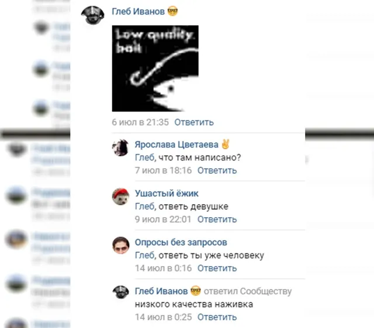
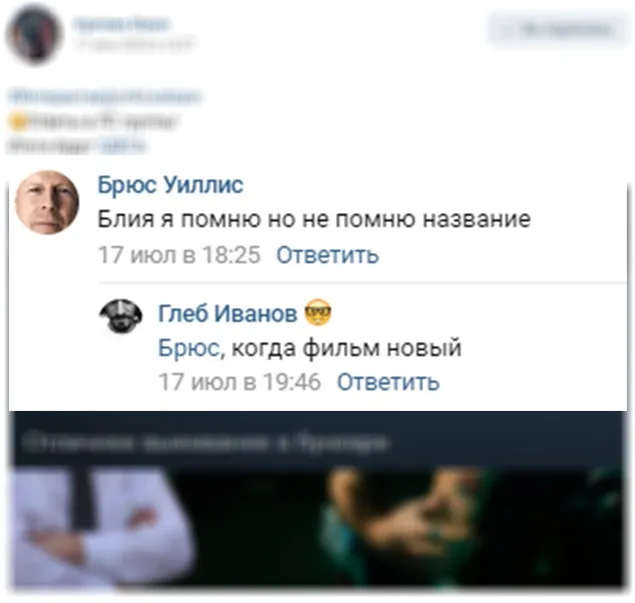
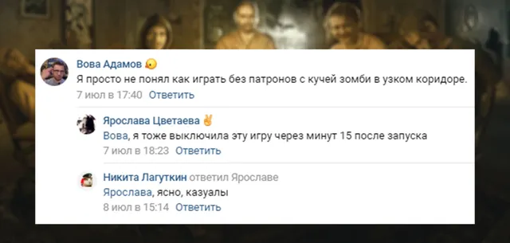
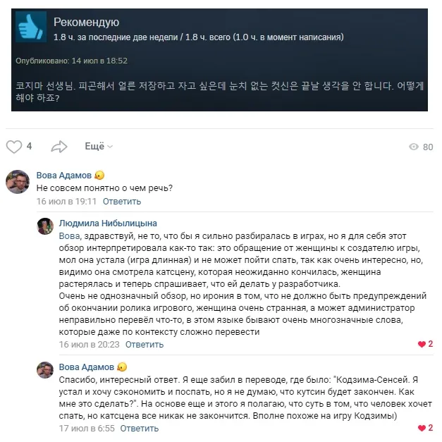
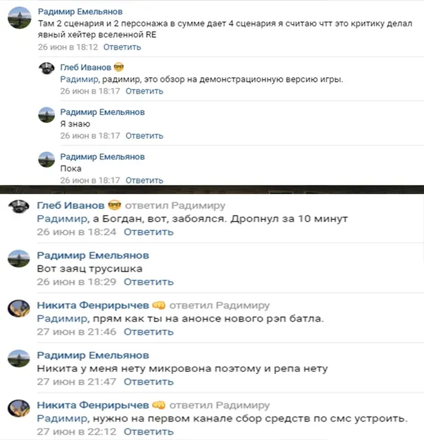
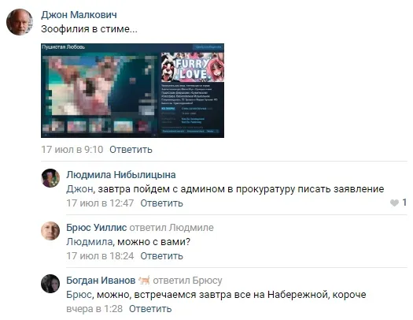
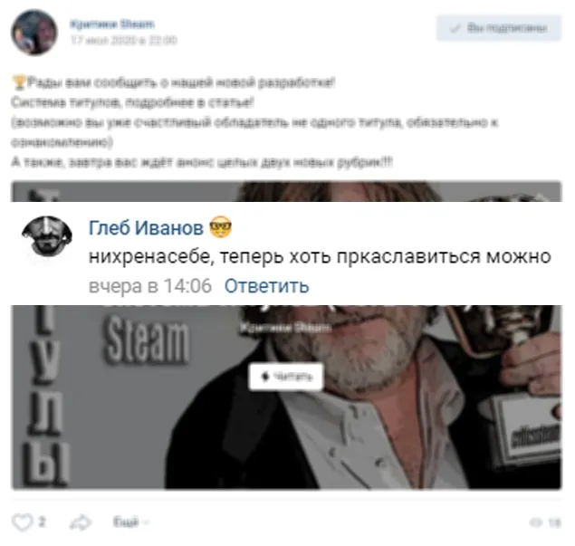
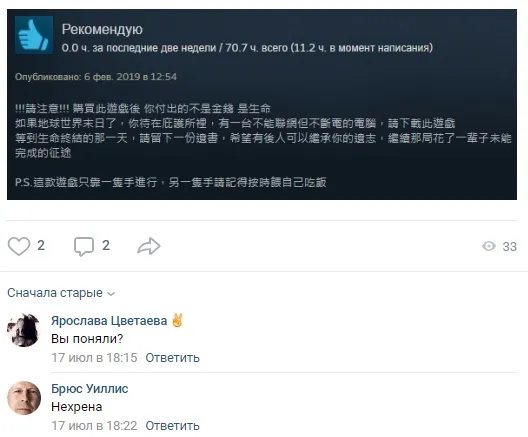

Ваши комментарии
ВКонтакте
Так как это первый выпуск новой рубрики и комменатриев не так много, сегодня сюд…
19 июля 2020 · №211 в выгрузке стены · оригинал во ВКонтакте ↗









#ВашиКомментарии@criticssteam #1
Так как это первый выпуск новой рубрики и комменатриев не так много, сегодня сюда попадут комментарии не только за прошедшую неделю, но и за все время существования нашего сообщества!
[https://vk.com/@criticssteam-sistema-titulov|Титул Комментатора] сегодня получают:
[id119602395|Вова Адамов]
[id191917835|Глеб Иванов]
[id491132613|Брюс Уиллис]
[id464764531|Никита Фенрирычев]
[id414268480|Радимир Емельянов]
[id284440935|Никита Лагуткин]
Так как это первый выпуск новой рубрики и комменатриев не так много, сегодня сюда попадут комментарии не только за прошедшую неделю, но и за все время существования нашего сообщества!
[https://vk.com/@criticssteam-sistema-titulov|Титул Комментатора] сегодня получают:
[id119602395|Вова Адамов]
[id191917835|Глеб Иванов]
[id491132613|Брюс Уиллис]
[id464764531|Никита Фенрирычев]
[id414268480|Радимир Емельянов]
[id284440935|Никита Лагуткин]